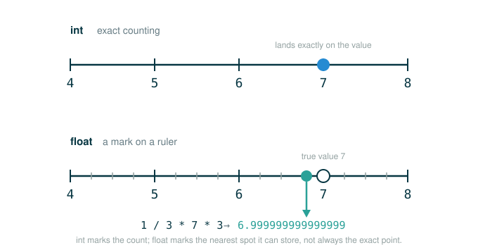

2.1 Introduction and Native Data Types
Chapter 1 was about processes: a function takes an input, follows a rule, and hands back an output. Chapter 2 starts a different question. Once your programs do something interesting, what kinds of information should those functions carry around, and how does Python keep track of what each piece of information actually is?
By the end of this lesson you will be able to do four things: name the native data types Python gives you for free, use the type function to ask Python what category any value belongs to, explain why integer arithmetic is exact while floating-point arithmetic is only an approximation, and predict the results of the small numeric examples that surprise almost every beginner.
The one habit to build here: before you trust a value, ask what type it is. A 2, a 2.0, and a "2" look almost identical on the screen, but Python treats them as three different things, and the difference will eventually bite you if you cannot see it.
From Actions to Information
In a tiny example, a function might only ever touch one number. Real programs are not like that. The information they move around is usually richer:
- A location has a latitude and a longitude.
- A student record has a name, a grade, a list of assignments, and a count of missing work.
- A game state has scores, whose turn it is, and the current rules.
- A sentence has words, punctuation, and structure.
Chapter 2 is about building these richer pieces of information without losing track of how your program thinks. The starting point, this lesson, is the raw material: the simple values Python already understands before you build anything.
A Real-World Analogy: Labeled Containers
Picture a recipe book. Chapter 1 mostly taught you how to write the recipes themselves: do this step, then that step, get a result. Chapter 2 teaches you how to package the ingredients.
A chef does not want to haul flour, salt, yeast, water, and oil around in five separate handfuls every single time. The chef wants one labeled container that says pizza dough. The label is not decoration. It lets the chef think at the right level and say:
stretch the dough
bake the dough
slice the pizzainstead of the unworkable:
move flour-water-yeast-salt-oil mixture number 17Now narrow that idea down to the very smallest ingredients, before any mixing happens. Even a single grain of salt comes with a label that tells the chef what it is and what you are allowed to do with it. You measure salt; you do not measure it the way you measure a whole egg. Python works the same way. Every value, even the simplest, arrives with a label that says what category it belongs to, and that label decides which operations make sense. That label is the value's type.
The Machine's View of Data
Python values are not loose marks on a screen. Every value belongs to a category that Python calls a class, which in everyday speech we also call its type. The type tells Python what operations are legal for that value and how they should behave.
The value 2 is an integer. The value 2.0 is a floating-point number. The value "2" is a string holding a single character. To a human they look like cousins. To Python they are three unrelated objects, and you can ask Python to confirm that directly.
# (1)
type(2)
The call in (1) asks Python a literal question: what kind of value is 2? In an interactive session, Python answers:
<class 'int'>The word int is short for integer. In mathematics, an integer is a whole number such as , , , or . Python's int type is its representation of exactly those whole numbers.
Follow the Line: The type Function
The call type(2) is small, but every character is pulling its weight. Read it one part at a time. Each branch below names what that part does, and the final line shows the value the whole call produces.
type(2)
├─ type ........ the built-in function that reports a value's class
├─ ( ........ opens the argument list
├─ 2 ........ the value handed in, the integer two
├─ ) ........ closes the argument list and triggers the call
└─ evaluates to <class 'int'>The rule worth memorizing is that Python evaluates the argument first, then calls the function on the result. For type(2) the argument is already a plain value, so there is nothing to compute before the call. That changes the moment the argument is itself an expression, which is exactly the case we reach below.
The Native Types
Python ships with several ready-made types. We call them native data types because they are built into the language before you define a single thing of your own.
| Python type | Example values | What the type means |
|---|---|---|
int |
0, 7, -12 |
Whole numbers, stored exactly |
float |
3.14, 0.5, -2.0 |
Real numbers, stored as nearby approximations |
complex |
1 + 1j |
Numbers with a real part and an imaginary part |
bool |
True, False |
Truth values |
str |
"hello", '61A' |
Text sequences |
NoneType |
None |
The value meaning "no useful result was produced" |
The complex row is a math idea you will rarely touch in this course; it is fine if the imaginary part is new to you, and we list it only so you know the type exists.
Python also has compound types, such as lists and dictionaries, which combine many values into one. Those become the main characters later in Chapter 2. This lesson stays with the simple values above, and the original text focuses tightly on the numeric ones: int, float, and complex.
Integers Are Exact, Even When They Are Huge
An integer behaves like an exact whole number, no matter how large it gets. Start with a warm-up you can check in your head.
# (2)
7 + 5
Python applies the + operator to two integer values and produces another integer:
7 + 5
├─ 7 .......... the integer seven
├─ + .......... addition of the value on the left and the value on the right
├─ 5 .......... the integer five
└─ evaluates to 12Nothing surprising yet. The interesting claim is that this exactness does not break down for enormous numbers. Many languages cap integers at a fixed width and silently overflow. Python does not: an int grows to whatever size it needs. The original text makes the point with a deliberately gigantic operand.
# (3)
12 + 3000000000000000000000000
3000000000000000000000012Look closely at the result. The trailing digits are exactly ...000012, which is 3000000000000000000000000 plus 12, with no rounding and no lost precision. That is the defining promise of int: every digit is correct, however many there are.
Floats Are Approximations: The Surprising Examples
A float is a different animal. The name comes from floating point, a representation where the decimal point can "float" to cover very small or very large magnitudes. Floats are enormously useful, but they pay for that range with precision: they store a value near the one you wanted, not always the exact one.
The original section makes this visible with two examples that look like they must return whole numbers and do not. Work through them by hand first, then read Python's answer.
# (4)
7 / 3 * 3
Mathematically, exactly: the division and the multiplication cancel. But / always produces a float, and has no exact finite decimal. Python stores the nearest float it can, then multiplies that approximation by 3. The result rounds back to a clean value here:
7.0Notice it is 7.0, a float, not the integer 7: once a float enters the computation, the result stays a float. Now a sibling expression where the rounding does not land cleanly.
# (5)
1 / 3 * 7 * 3
Mathematically this is also exactly . But is stored as a nearby approximation, and multiplying that approximation by 7 and then by 3 lets the tiny error show through:
6.999999999999999This is not Python being bad at arithmetic. It is Python being honest about a finite measuring system. The two examples together carry the whole lesson: sometimes the approximation rounds back to what you expected (7.0), and sometimes it does not (6.999999999999999), and you cannot always predict which from the math alone.
Here is the mental model to keep straight for the rest of the course:
int exact counting value
float nearby measuring value
str text characters, even if those characters look like digits
bool answer to a yes-or-no question
None a real value meaning "no useful result was returned"Think of an int like a tally mark: add one more and the count is exactly one larger, forever. Think of a float like a mark on a ruler: it can measure tremendously useful quantities, but the mark may not land on the mathematically perfect point. That is why the examples above are not bugs. They are the ruler showing its smallest division.
The figure below contrasts these two mental models side by side.

Reading the Type of an Approximation
You can confirm with type that division produces a float and that one-third is stored approximately.
# (6)
type(1.5)
<class 'float'>The decimal point in 1.5 is what tells Python to use the float type. Division does the same thing even when both inputs are integers.
# (7)
type(1 / 3)
This time the argument to type is itself an expression, so the inside-first rule matters. Follow the line:
type(1 / 3)
├─ type ........ the built-in function that reports a value's class
├─ ( ........ opens the argument list
├─ 1 / 3 ....... evaluated first, producing a float near one third
├─ ) ........ closes the argument list and triggers the call
└─ evaluates to <class 'float'>Spelled out as ordered steps, Python:
1. Evaluates 1.
2. Evaluates 3.
3. Applies / to produce a float approximation of one third.
4. Calls type on that float.
5. Returns <class 'float'>.So the answer is the class of the value, not the class of the digits you typed:
<class 'float'>Now look at the stored approximation itself.
# (8)
1 / 3
Mathematically, repeating without end. A computer cannot hold infinitely many digits, so Python keeps the nearest float it can represent:
0.3333333333333333That stored approximation is the source of one of the first real data pitfalls in Python: equality between floats can surprise you.
# (9)
1 / 3 == 0.333333333333333312345
TrueRead that carefully. The two sides are not the same mathematical number, and the literal on the right has extra digits the float cannot even store. Python answers True because both sides round to the very same float before the comparison happens. The == is comparing stored approximations, not the infinitely precise value , and not the exact digits you typed. The machine model underneath is:
Human idea: one third, exactly
Python float: nearest representable decimal approximation
Printed result: a readable version of that approximationWhen your program needs exact whole-number reasoning, reach for int. When it needs measurement-style decimal reasoning, float is the right tool, but exact equality between floats becomes a trap rather than a test.
Complex Numbers Are Native Too
Python's numeric story does not stop at integers and reals. It also has a built-in complex type for numbers with a real part and an imaginary part, written with a j suffix on the imaginary part. The original text confirms the type directly.
# (10)
type(1 + 1j)
Follow the line so the j does not look like a typo:
type(1 + 1j)
├─ type ........ the built-in function that reports a value's class
├─ ( ........ opens the argument list
├─ 1 + 1j ...... evaluated first, a complex number with real part 1 and imaginary part 1
├─ ) ........ closes the argument list and triggers the call
└─ evaluates to <class 'complex'><class 'complex'>You will not use complex much in this course, but it is worth seeing once so that "Python's numbers" means more than just int and float in your head. The point of the example is simply that complex is a first-class native type, not an add-on.
The Official Numeric Tour, Verbatim
The original section runs through these numeric examples one after another in an interactive session. Here they are together, exactly as the source presents them, so you can see the full sweep of behavior in one place. Each was unpacked individually above.
# (11)
type(2)
12 + 3000000000000000000000000
type(1.5)
type(1 + 1j)
7 / 3 * 3
1 / 3 * 7 * 3
The results, in order:
<class 'int'>
3000000000000000000000012
<class 'float'>
<class 'complex'>
7.0
6.999999999999999Two lessons sit side by side in this tour. The giant integer shows that int stays exact no matter how large it grows. The last two float results show the opposite: once division introduces an approximation, later multiplication may not return the exact mathematical value you expected.
The Shape of a Literal
A literal is a value you write directly in the program, character for character. Python decides the type of many values straight from the characters you type.
# (12)
2 # int
2.0 # float
"2" # str
True # bool
None # NoneType
In (12), the characters are the whole story:
2on its own is parsed as an integer literal.2.0contains a decimal point, so Python parses it as a floating-point literal."2"sits inside quotation marks, so Python parses it as text, not as a number.Trueis one of the two reserved truth values, alongsideFalse.Noneis the single built-in value Python uses when there is no meaningful result.
The quotation marks in "2" never become part of the text. They are syntax markers that tell Python where the string starts and stops. The stored value is the single character 2, and Python will not do arithmetic with it.
⚠Common Beginner Traps
The first trap is confusing a value with the way it is printed. The text 0.3333333333333333 on your screen is not the infinite mathematical value . It is a readable rendering of the nearest float Python could store. Two floats that print differently might still be equal, and two ideas that are mathematically equal might be stored as different floats.
The second trap is expecting float arithmetic to land on exact values. Seeing 6.999999999999999 where you expected 7 feels like a malfunction. It is not. It is the predictable result of a finite representation, and the fix is never to test floats with exact equality when you need a precise answer.
The third trap is confusing strings with numbers because they share characters:
# (13)
"4" + "5"
4 + 5
The first expression produces "45", because + on two strings joins text end to end. The second produces 9, because + on two integers adds numbers. Same operator symbol, completely different behavior, decided entirely by the types of the values. When in doubt, ask type before you trust an operation.
✓Check Your Understanding
- What is the type of
7, and what is the type of7.0? - What does
type("7")evaluate to, and why is it different fromtype(7)? - What does
8 / 2evaluate to, and what is its type? Explain how you can tell without running it. - Why does
1 / 3 * 7 * 3return6.999999999999999instead of7? - Why can
1 / 3 == 0.333333333333333312345evaluate toTrueeven though those are not the same mathematical number? - In
type(1 / 3), which part of the expression is evaluated first, and what is the final result?
Show the answers
7has typeintbecause it is a whole number with no decimal point;7.0has typefloatbecause the decimal point tells Python to store it as an approximate real value.type("7")evaluates to<class 'str'>, whiletype(7)evaluates to<class 'int'>. The quotation marks make the character7into text, so Python stores a string, not a number.8 / 2evaluates to4.0, which has typefloat. The/operator always produces a float, even when the two operands divide evenly, so the result is the float4.0rather than the integer4.1 / 3is stored as a nearby float approximation, not the exact value. Multiplying that approximation by7and then3lets the small stored error surface, so the result lands just below7.- Both sides round to the same stored float before the comparison runs.
==compares those stored approximations, not the infinitely precise value and not the exact digits typed on the right. - The inner expression
1 / 3is evaluated first, producing a float;typeis then called on that float, and the whole call evaluates to<class 'float'>.
§Summary
Chapter 2 shifts the focus from processes to data. Every Python value belongs to a type, also called its class, and that type decides which operations are legal and how they behave. The native data types are the raw material: int for exact whole numbers, float for approximate real numbers, complex for numbers with an imaginary part, bool for truth values, str for text, and NoneType for the absence of a useful result. The type function lets you ask Python what category any value belongs to, evaluating its argument first and then reporting the class. Integers stay exact no matter how large they grow, while floats trade exactness for range, which is why 7 / 3 * 3 rounds to 7.0 but 1 / 3 * 7 * 3 lands on 6.999999999999999. Hold onto the core habit: when a value's behavior surprises you, ask what type it is before you ask what went wrong.
▶Step-Through Checkpoint
This short program is the lesson's capstone: it is built to make the difference between int and float visible, and it ends on a type call. The environment diagram for this has a single global frame, and watching exact_total, approx_third, and mixed get added to that one frame shows you the kind of value each name holds — the unbounded integer next to the rounded floats — long before the final type(mixed) names it out loud. Before you step through the block below, write down three predictions:
- how many names the global frame holds when the last line finishes,
- which of the bound values display with a decimal point, and
- whether storing
1 / 3inapprox_thirdfirst, then multiplying, gives a different answer from writing1 / 3 * 7 * 3all at once, as you saw earlier.
# (14)
exact_total = 12 + 3000000000000000000000000
approx_third = 1 / 3
mixed = approx_third * 7 * 3
type(mixed)
Step through it one line at a time and check each prediction as the bindings appear. Exactly three names appear, because type(mixed) on the last line is a bare expression and binds nothing new. exact_total holds 3000000000000000000000012 with every digit intact, while approx_third and mixed carry the decimal points: 0.3333333333333333 and 6.999999999999999 rather than 7.0. Routing through a name changes nothing, because assignment stores the finished value, not the expression, so the stored approximation carries through the multiplications. The final line evaluates mixed first and reports <class 'float'>: once a float enters the computation, the result stays a float.